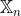
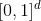
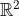

Vincent Bertin
 |
BrieflyI am a second year PhD student working under the supervision of Thomas Salez and Elie Raphaël. I work at Université de Bordeaux and at ESPCI Paris in the Gulliver laboratory. My two main research interests are geometric inference and topological data analysis (TDA). My work in geometric inference consists in developping selection techniques for estimating geometric objects (such as homology groups, manifolds or tangent spaces). Concerning TDA, I focused on studying persistence diagrams (a popular tool to sum up the topological information underlying a dataset) from a statistical perspective, e.g. proving laws of large numbers, providing properties of expectations, etc. Here is a short CV : English, French. Contact
|
Publications and Preprints
V. Divol Minimax adaptive estimation in manifold inference.
[hal, arXiv], 2020, preprint. [Show Abstract]Abstract: We focus on the problem of manifold estimation: given a set of observations sampled close to some unknown submanifold , one wants to recover information about the geometry of . Minimax estimators which have been proposed so far all depend crucially on the a priori knowledge of some parameters quantifying the regularity of (such as its reach), whereas those quantities will be unknown in practice. Our contribution to the matter is twofold: first, we introduce a one-parameter family of manifold estimators , and show that for some choice of (depending on the regularity parameters), the corresponding estimator is minimax on the class of models of manifolds introduced in [Genovese et al., Manifold estimation and singular deconvolution under Hausdorff loss]. Second, we propose a completely data-driven selection procedure for the parameter , leading to a minimax adaptive manifold estimator on this class of models. The same selection procedure is then used to design adaptive estimators for tangent spaces and homology groups of the manifold .
V. Divol, T. Lacombe Understanding the topology and the geometry of the persistence diagram space via optimal partial transport.
[hal, arXiv], 2019, preprint. [Show Abstract]Abstract: Despite the obvious similarities between the metrics used in topological data analysis and those of optimal transport, an optimal-transport based formalism to study persistence diagrams and similar topological descriptors has yet to come. In this article, by considering the space of persistence diagrams as a measure space, and by observing that its metrics can be expressed as solutions of optimal partial transport problems, we introduce a generalization of persistence diagrams, namely Radon measures supported on the upper half plane. Such measures naturally appear in topological data analysis when considering continuous representations of persistence diagrams (e.g. persistence surfaces) but also as limits for laws of large numbers on persistence diagrams or as expectations of probability distributions on the persistence diagrams space. We study the topological properties of this new space, which will also hold for the closed subspace of persistence diagrams. New results include a characterization of convergence with respect to transport metrics, the existence of Fréchet means for any distribution of diagrams, and an exhaustive description of continuous linear representations of persistence diagrams. We also showcase the usefulness of this framework to study random persistence diagrams by providing several statistical results made meaningful thanks to this new formalism.
V. Divol, W. Polonik On the choice of weight functions for linear representations of persistence diagrams.
[hal, arXiv], 2019, Journal of Applied and Computational Topology, 3: 249. [Show Abstract]Abstract: Persistence diagrams are efficient descriptors of the topology of a point cloud. As they do not naturally belong to a Hilbert space, standard statistical methods cannot be directly applied to them. Instead, feature maps (or representations) are commonly used for the analysis. A large class of feature maps, which we call linear, depends on some weight functions, the choice of which is a critical issue. An important criterion to choose a weight function is to ensure stability of the feature maps with respect to Wasserstein distances on diagrams. We improve known results on the stability of such maps, and extend it to general weight functions. We also address the choice of the weight function by considering an asymptotic setting; assume that  is an i.i.d. sample from a density on . For the Čech and Rips filtrations, we characterize the weight functions for which the corresponding feature maps converge as approaches infinity, and by doing so, we prove laws of large numbers for the total persistences of such diagrams. Those two approaches (stability and convergence) lead to the same simple heuristic for tuning weight functions: if the data lies near a
approaches infinity, and by doing so, we prove laws of large numbers for the total persistences of such diagrams. Those two approaches (stability and convergence) lead to the same simple heuristic for tuning weight functions: if the data lies near a  -dimensional manifold, then a sensible choice of weight function is the persistence to the power
-dimensional manifold, then a sensible choice of weight function is the persistence to the power  with
with  .
.
F. Chazal, V. Divol The density of expected persistence diagrams and its kernel based estimation.
[proceedings, hal, arXiv], 2018, Proceedings of the Symposium of Computational Geometry. [Show Abstract]Abstract: Persistence diagrams play a fundamental role in Topological Data Analysis where they are used as topological descriptors of filtrations built on top of data. They consist in discrete multisets of points in the plane  that can equivalently be seen as discrete measures in . When the data come as a random point cloud, these discrete measures become random measures whose expectation is studied in this paper. First, we show that for a wide class of filtrations, including the Čech and Rips-Vietoris filtrations, the expected persistence diagram, that is a deterministic measure on , has a density with respect to the Lebesgue measure. Second, building on the previous result we show that the persistence surface recently introduced in [Adams & al., Persistence images: a stable vector representation of persistent homology] can be seen as a kernel estimator of this density. We propose a cross-validation scheme for selecting an optimal bandwidth, which is proven to be a consistent procedure to estimate the density.